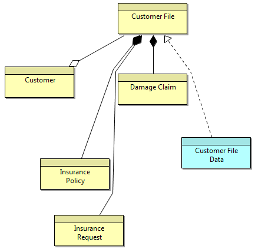
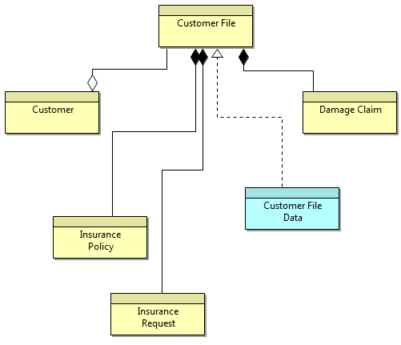

Manual Router
By default, connections are drawn as straight lines from element to element. Bend-points can be added to a connection as detailed here. However, it is possible to set the overall connection router type so that the connections route around elements or are drawn orthogonally.
The connection router type can be set either from the main "View->Connection Router" menu or by right-clicking on a View or from the "Appearance" tab in the Properties Window when the View canvas is selected.
The available router types are as follows:
Connections are drawn in straight lines. Bend-points can be added by the user.
Manual Router
Connections are drawn to avoid elements and route around them. Bend-points can be added by the user.

Shortest Path Router
Connections are routed orthogonally. Bend-points cannot be added by the user.

Manhattan Router